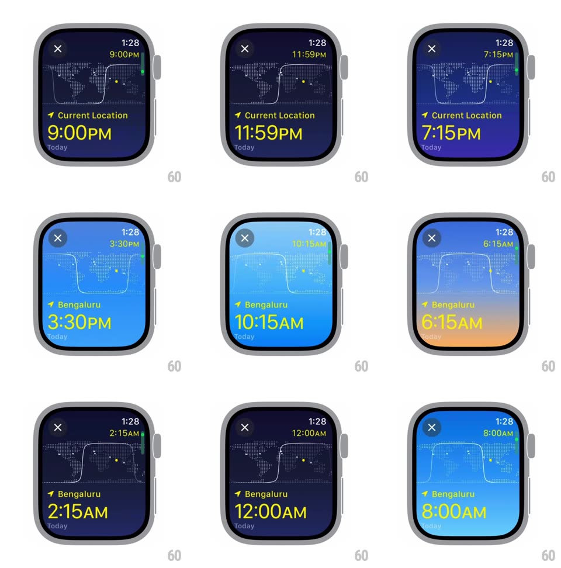

Media
Frame-by-frame

Rebuild this interaction 1:1: Apple Watch World Clock time scroll - turning the crown scrubs through the hours while the whole face responds: sky gradient shifts through day/dusk/night, the dotted world map's terminator line slides, and the big time readout rolls.

Rebuild this interaction 1:1: Apple Watch World Clock time scroll - turning the crown scrubs through the hours while the whole face responds: sky gradient shifts through day/dusk/night, the dotted world map's terminator line slides, and the big time readout rolls.
## Integration
Integration: stack-agnostic spec - springs given as stiffness/damping, timed motions as duration + curve; map every value to your framework and animation library of choice.
## Scene
Watch face: X button top-left, small current time top-right, scrubbed time in yellow, a dotted world map band with the day/night terminator curve, "Current Location"/"Bengaluru" label, large time readout, "Today" sublabel.
## Motion spec
Pattern: crown-scrubbed time travel.
- Scrub: the big time rolls digit-wheel style (each digit translates vertically, ~150ms per step) tracking the crown with no lag; minutes tick in 15-min steps with haptic detents.
- The background sky gradient cross-fades continuously through keyed stops: bright blue (morning), pale cyan (midday), orange-magenta (dusk ~6:30PM), deep navy (night) - interpolated per scrubbed hour, not snapped.
- The terminator curve on the map translates horizontally with the scrubbed hour (24h = full map width) and its soft edge breathes slightly (blur 2-6px) near dawn/dusk.
- City dots on the map twinkle brighter during night hours (opacity 0.4 -> 1).
- Location label swaps ("Current Location" -> "Bengaluru") with a 200ms crossfade when context changes.
- Idle 2s: the readout gently settles back toward real time (500ms ease).
## Calibration
- Every visual (sky, terminator, dots) derives from the same scrubbed hour value - they never disagree.
- Dusk and dawn stops must hit at plausible hours; the orange band is narrow (~1h wide).
## Reduced motion
Sky snaps per stop instead of interpolating; digit roll becomes a crossfade.
## Don't miss
- The map is rendered in dots (dotted-matrix style), not solid continents.
- Yellow is reserved for the scrubbed time; the real time stays small and white top-right.